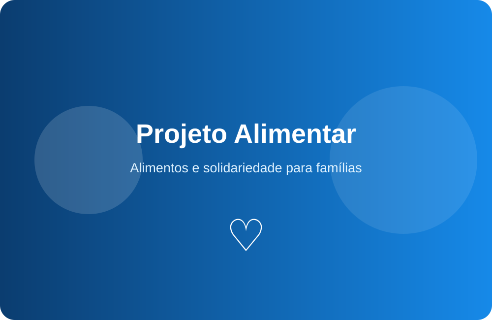
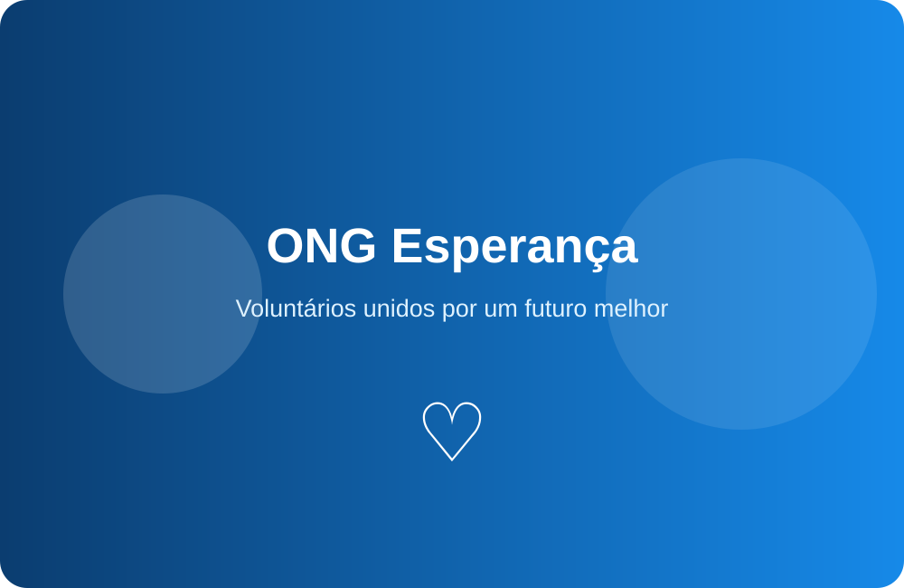
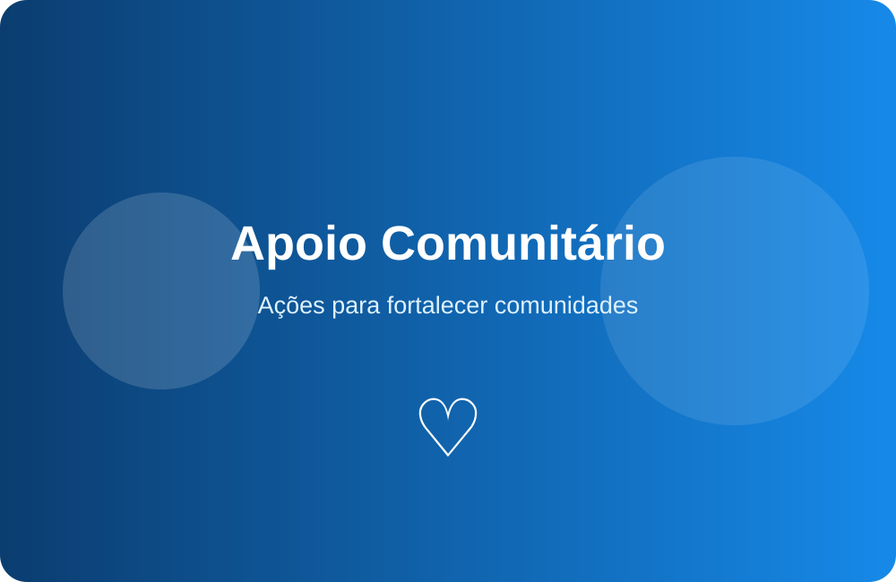
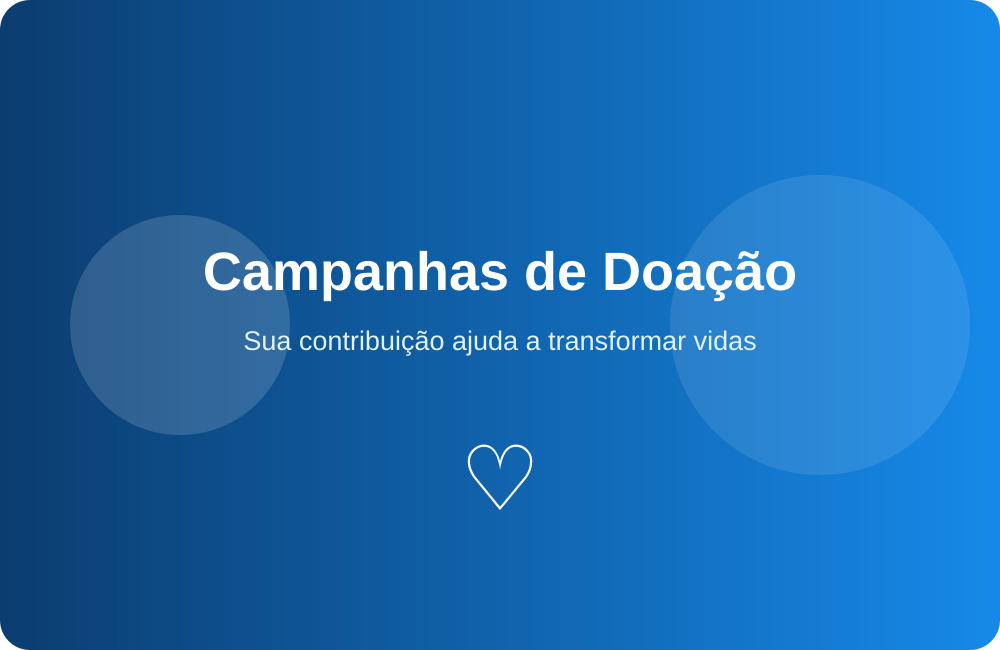

Projeto Alimentar
O Projeto Alimentar arrecada e distribui alimentos para famílias em situação de vulnerabilidade social.
A ONG Esperança atua no desenvolvimento de projetos sociais voltados ao apoio de pessoas em situação de vulnerabilidade, promovendo inclusão, solidariedade e oportunidades.
Conheça nossos projetos →
A ONG Esperança atua no desenvolvimento de projetos sociais voltados ao apoio de pessoas em situação de vulnerabilidade, promovendo inclusão, solidariedade e oportunidades.
Nosso trabalho é realizado por meio de ações comunitárias, campanhas de doação e participação voluntária.
Conheça os principais projetos desenvolvidos pela nossa organização para promover inclusão social, educação e apoio às comunidades.

O Projeto Alimentar arrecada e distribui alimentos para famílias em situação de vulnerabilidade social.
O Projeto Educação oferece apoio escolar, oficinas e atividades educativas para crianças e jovens.

O Projeto Apoio Comunitário realiza ações destinadas às necessidades das comunidades atendidas.
As campanhas de doação ajudam a ONG Esperança a manter seus projetos sociais e ampliar o atendimento às comunidades.
Você pode contribuir com alimentos, roupas, materiais escolares, produtos de higiene ou doações financeiras.
Saiba como fazer uma doação →O trabalho voluntário é uma forma de participar diretamente das ações da ONG e contribuir para a transformação das comunidades atendidas.
Entre em contato com nossa equipe e informe seu interesse em atuar como voluntário.

Para obter informações sobre os projetos, realizar uma doação ou participar como voluntário, entre em contato com a ONG Esperança.